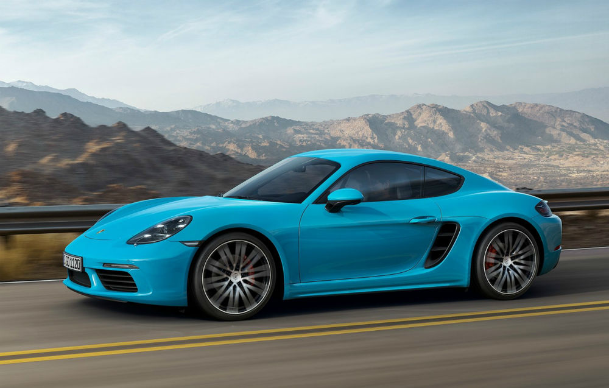
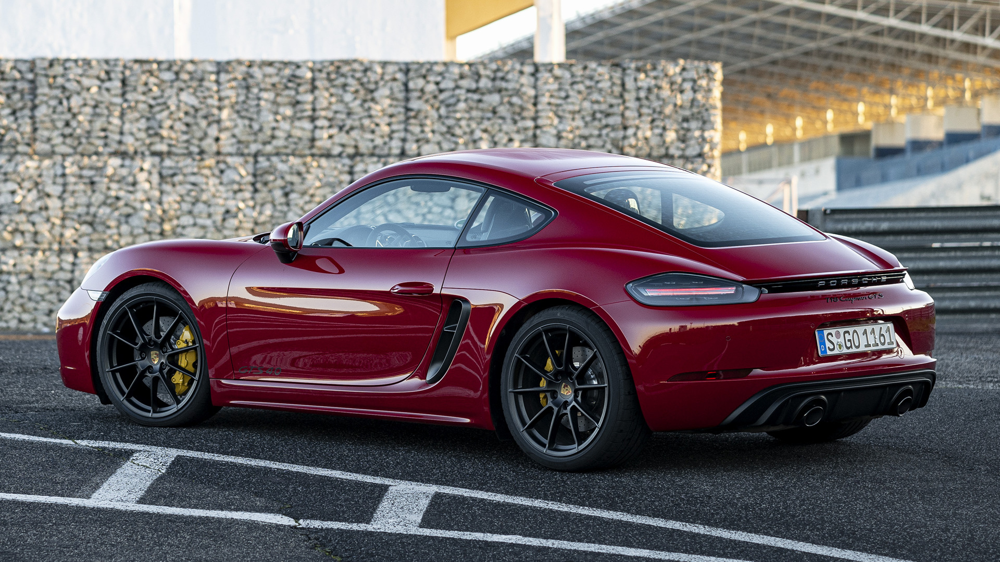
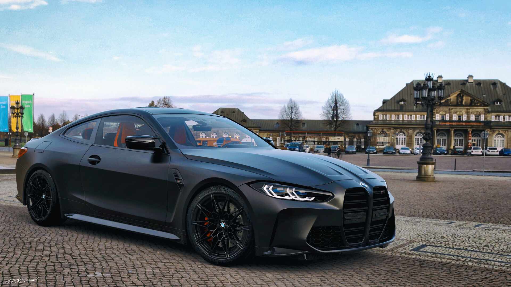

vladCarTips
Care este masina care vi se potriveste?
Apasati pe buton pentru a afla

Car Picks Of The Week
Porsche 718 Cayman GTS 4.0 - inapoi la origini

Intr-un final, Porsche relanseaza modelul 718 cu un motor in 6 cilindri, fata de cei 4 aflati in modelele de baza si S. Oare este diferenta atat de mare?
Porsche 911 992 Carrera S - flagship-ul brandului Porsche se intoarce

Flagship-ul Porsche, cel mai popular model al lor se intoarce si este mai atractiv ca oricand.
BMW M4 Competition - noul coupe de la BMW in cea mai puternica configuratie

Noul M4 pare sa fie un model controversat din cauza noilor grile de tip "rinichi" ce sunt acum si mai mari. Poate ca cei 510 cai putere vor putea face grilele "aceptabile".